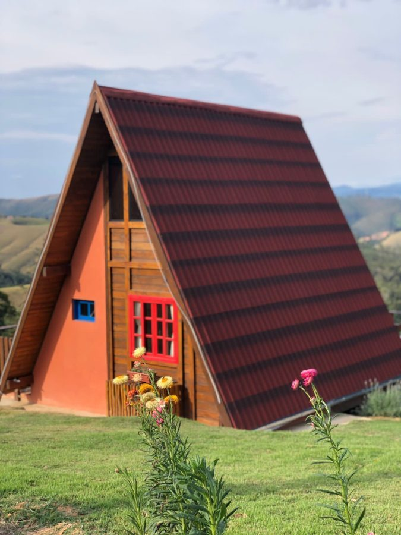
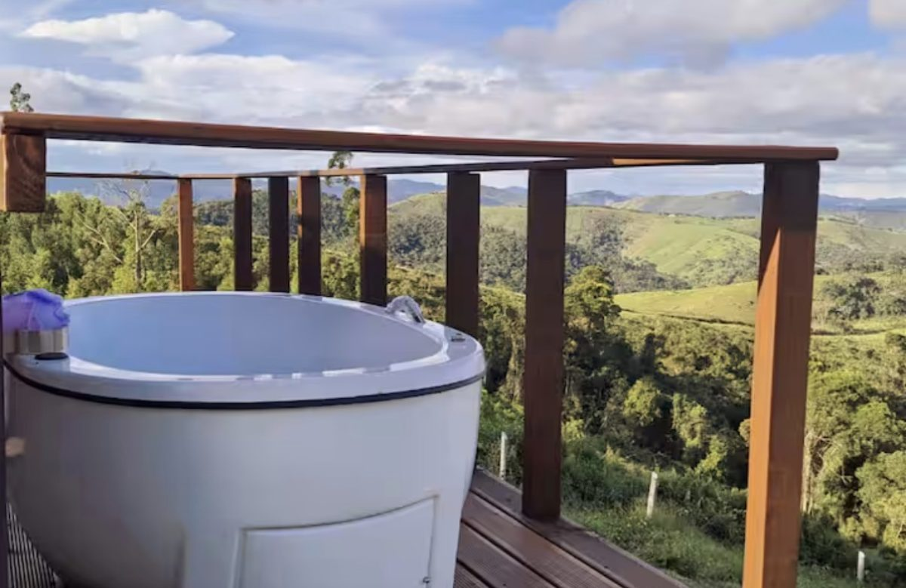
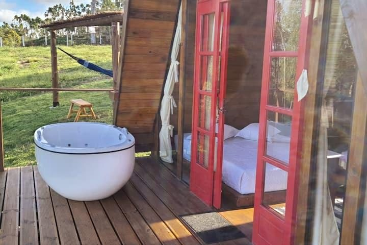

Glamping Toca do Tucano Entre a montanha e o silêncio.
Dois chalés em A no alto de uma montanha de Mata Atlântica, dentro da Reserva Altos das Laranjeiras — em Paraibuna, interior de São Paulo.
Paraibuna · Vale do Paraíba · SP
01 A Toca
Um lugar para o tempo diminuir.

No alto de uma montanha em Paraibuna existem dois chalés em A — e só eles, em mais de 30 mil m² de Mata Atlântica.
A Toca do Tucano é um glamping romântico feito para descanso de verdade. O vale à frente, o céu aberto e o som dos pássaros ocupam o lugar da agenda. Privacidade e segurança não são um extra: são a razão de existirem só dois chalés.
Paraibuna fica no alto Vale do Paraíba, ao pé da Serra do Mar. Na Toca, a montanha não é pano de fundo — é a vista da cama, do deck e do ofurô.
- chalés em A
- 2
- de área para os dois
- +30 mil m²
- no entorno
- Mata Atlântica
- região
- Vale do Paraíba

Do deck
A montanha à frente.
O ofurô fica no deck, voltado para o vale. Entre a água e a mata, só o guarda-corpo de madeira.
02 A Reserva
Dentro de uma reserva onde a mata voltou.
50anos de pioneirismo e preservação da Mata Atlântica
+700mil m² de matas recuperadas
A Toca do Tucano está dentro da Reserva Altos das Laranjeiras, em Paraibuna. São cinco décadas de trabalho na preservação da Mata Atlântica e mais de 700 mil m² de floresta recuperada. Os dois chalés ficam no alto dessa paisagem.
Por isso, na Toca, a natureza não é decoração. É vizinhança.
Números divulgados pela Reserva Altos das Laranjeiras.
03 Experiência
O tempo sem pressa.
Não há programação a cumprir. Há um deck, um ofurô, uma rede e a montanha inteira em volta. O resto, o dia decide.

Durante o dia
- 01Ofurô no deckAo ar livre, de frente para o vale.
- 02Rede de contemplaçãoNo gramado, sob o pergolado de madeira.
- 03Bicicletas de montanhaPara quem prefere ver o vale em movimento.
- 04Churrasqueira ao ar livreMontada de frente para o vale.
- 05Som dos pássarosDo amanhecer ao fim da tarde.
Quando escurece
Noites sob as estrelas.
À noite, a fogueira é acesa para olhar o céu. Um telescópio de observação aproxima o que está lá em cima, e a lareira ecológica cuida do resto.
- Fogueira noturnapara ver as estrelas
- Telescópio de observaçãopara chegar mais perto delas
- Lareira ecológicapara as noites frias da montanha
04 Os chalés
Arquitetura em A, de frente para o vale.

Por fora, o telhado inclinado desce quase até o chão, e a fachada de madeira e terracota guarda uma janela vermelha e outra, pequena, azul.
Por dentro, a cama de casal fica voltada para as portas de vidro vermelhas. Do outro lado delas estão o deck, o ofurô e o vale. São só dois chalés em mais de 30 mil m² — é essa conta que faz da Toca um lugar de privacidade.
Consultar disponibilidadeCapacidade, valores e condições são confirmados pelo WhatsApp.
No chalé
- Cama de casal
- Bancada de cozinha com pia
- Lareira ecológica
- Portas de vidro para o deck
- Ofurô no deck
- Vista para o vale e as montanhas
Nota 4,9
05 Avaliações
A nota de quem já subiu a montanha.
Os relatos completos dos hóspedes, com nome e data, estão no perfil da Toca do Tucano no Google. A Toca também recebe hóspedes pelos anúncios no Airbnb.
06 Onde fica
Entre o verde e as montanhas de Paraibuna.
Glamping Toca do Tucano Reserva Altos das LaranjeirasEstrada das Laranjeiras, km 2
Bairro das Laranjeiras
Paraibuna — SP, Brasil
Paraibuna está no alto Vale do Paraíba, ao pé da Serra do Mar, às margens da Rodovia dos Tamoios — a estrada que liga o Vale ao Litoral Norte de São Paulo. Todo o município está no domínio da Mata Atlântica.
Reserva Altos das Laranjeiras · Paraibuna
O mapa do Google só carrega se você pedir.
07 Reserva direta
Sua próxima pausa pode começar aqui.
Escolha as datas e fale direto com o Daniel, anfitrião da Toca, pelo WhatsApp. Disponibilidade, valores e condições são confirmados na conversa — sem intermediários.
No Instagram
Acompanhar no Instagram“Glamping romântico e relaxante no alto da montanha. Dentro da Reserva Altos das Laranjeiras Paraibuna. Segurança e privacidade.”
08 Perguntas
Antes de subir a montanha.
Não achou o que procurava? Pergunte pelo WhatsApp.
O que é o Glamping Toca do Tucano?
É um glamping com dois chalés em A no alto de uma montanha em Paraibuna (SP), dentro da Reserva Altos das Laranjeiras, em meio à Mata Atlântica. A proposta é descanso com privacidade: ofurô no deck, vista para o vale e apenas dois chalés em mais de 30 mil m².
Onde fica a Toca do Tucano?
Na Reserva Altos das Laranjeiras: Estrada das Laranjeiras, km 2, Bairro das Laranjeiras, Paraibuna, São Paulo. Paraibuna fica no alto Vale do Paraíba, ao pé da Serra do Mar, às margens da Rodovia dos Tamoios. Veja o mapa.
Quem administra a Toca do Tucano?
A Toca do Tucano é administrada pelo anfitrião Daniel. Consultas de disponibilidade e reservas diretas são feitas pelo WhatsApp (12) 99214-1763.
Quantas acomodações existem na Toca do Tucano?
Dois chalés em A, em uma área de mais de 30 mil m². O número reduzido de chalés é o que garante privacidade e isolamento.
O que há nos chalés?
Cama de casal, bancada de cozinha com pia, lareira ecológica e portas de vidro que se abrem para o deck, onde fica o ofurô, de frente para o vale. Capacidade e itens específicos são confirmados pelo WhatsApp.
Que experiências existem na propriedade?
Ofurô no deck com vista para o vale, fogueira noturna para ver as estrelas, telescópio de observação, bicicletas de montanha, rede de contemplação sob o pergolado e churrasqueira ao ar livre de frente para o vale.
Como consultar disponibilidade?
Pelo formulário de reserva direta: escolha as datas de chegada e saída e o WhatsApp abre com a mensagem pronta para (12) 99214-1763. É só enviar.
É possível reservar diretamente, sem plataforma?
Sim. A reserva direta é combinada com o anfitrião pelo WhatsApp. A Toca também tem anúncios no Airbnb para quem prefere reservar por lá.
Como saber valores, horários e regras da estadia?
Valores, horários de entrada e saída e regras da hospedagem são informados pelo WhatsApp, junto com a disponibilidade das datas escolhidas.
A Toca do Tucano é indicada para casais?
A própria Toca se apresenta como um glamping romântico e relaxante no alto da montanha. Privacidade, ofurô no deck, fogueira e vista para o vale fazem parte da proposta.